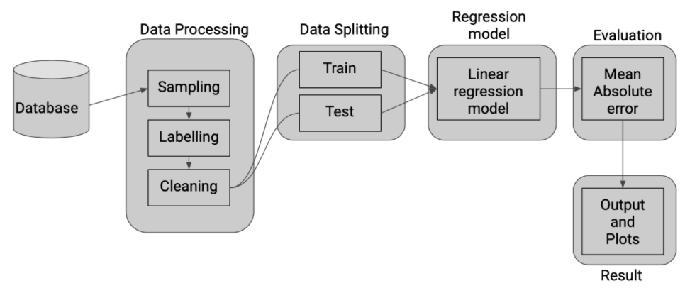
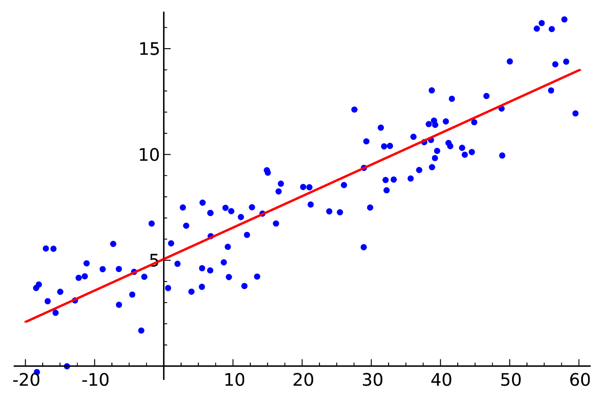

Model¶
High Level Design¶
As for a high level idea, we start off by preprocessing our data, which includes sampling, labelling, cleaning and splitting it into train and test data. We the use a linear regression approach to model our dataset and get the output. This is further evaluated by metrics such as Mean Absolute Error as explained below.
Linear Regression¶
Linear regression is a linear approach to modelling the relationship between a scalar response and one or more explanatory variables. The case of one explanatory variable is called simple linear regression.
Linear regression is the next step up after correlation. It is used when we want to predict the value of a variable based on the value of another variable. The variable we want to predict is called the dependent variable (or sometimes, the outcome variable). Linear regression consists of finding the best-fitting straight line through the points. The best-fitting line is called a regression line.
Evaluation¶
Since we are attempting to perform regression which outputs continuous value within a given range. Our main goal is to minimize the error which is defined by the Loss Function.
We have chosen average lifespan as our baseline. We compare our other features with this baseline by plotting graphs and using Mean Absolute Error (MAE) as a metric to evaluate the results of the prediction. MAE is the sum of absolute distances between our target variable and predicted values.
Mathematically, it can be expressed as follows:
where \(y_i\) is the predicted value from the regression model, \(x_i\) is the true value of the datapoint and N is the number of datapoints.